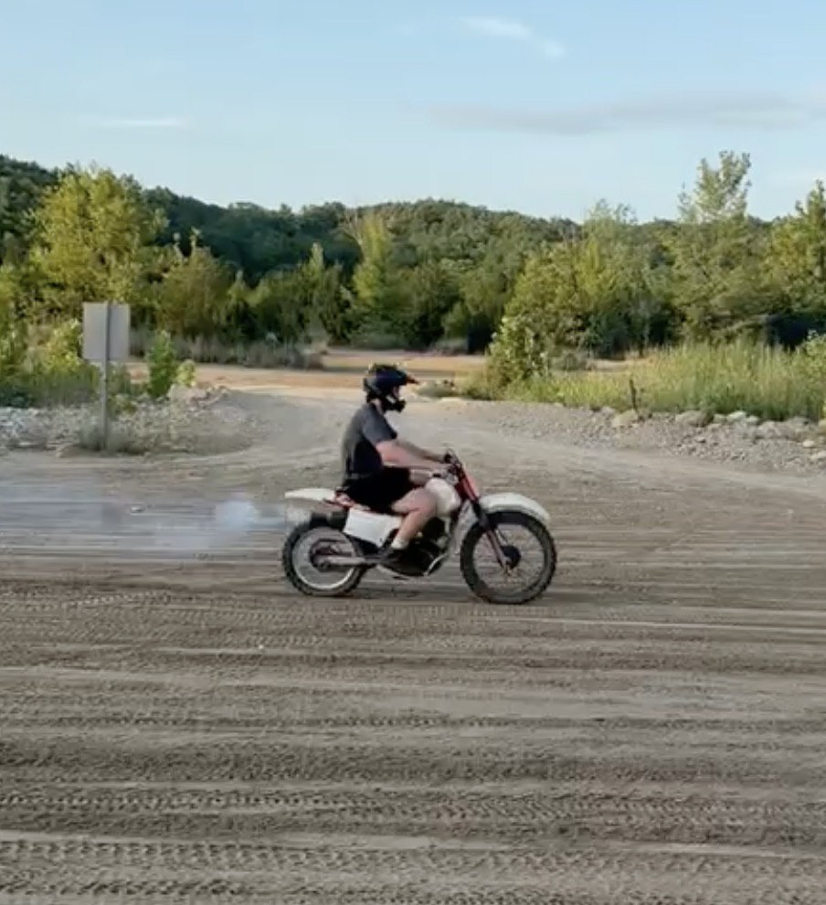
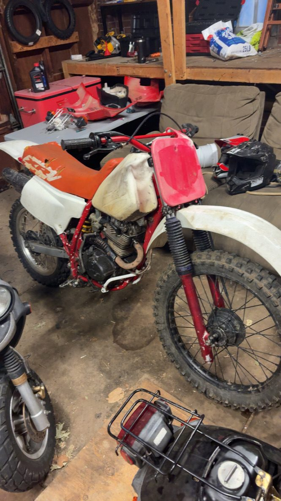
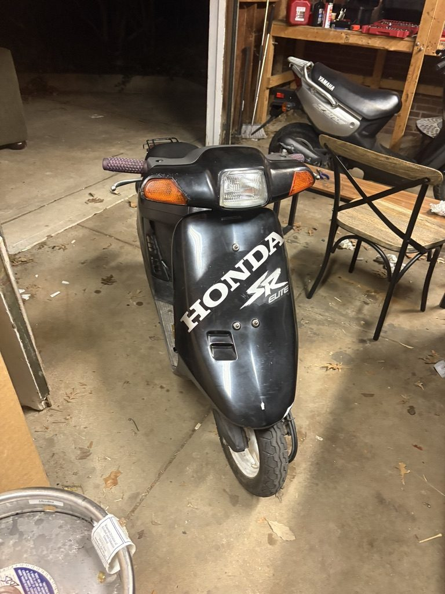
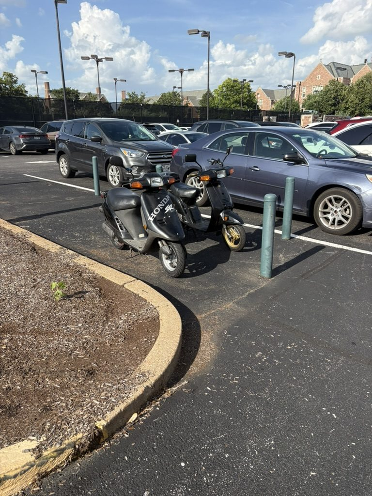

Two non-running Hondas returned to operational condition. Both were self-directed with no manual walking me through the failure, so every problem started as a symptom and had to be narrowed to a cause before any part was ordered. The engineering value here is the diagnostic method rather than the wrenching: isolating internal engine wear on the XR200 to worn piston rings, instead of replacing components until something worked, is the piece of this project I would most want to talk through in an interview.




Diagnostic process
- Worked each fault backward from symptom to cause — compression and performance loss on the XR200 traced to worn piston rings; inconsistent running on both vehicles traced to carburetor contamination and calibration rather than ignition.
- Validated every repair through iterative test cycles before moving to the next system, isolating one variable at a time so a fix could be confirmed as the fix.
- Evaluated OEM against aftermarket components for fit, material and performance compatibility before committing to a part.
Work performed
- Rebuilt or modified engine, fuel-delivery, braking, suspension, drivetrain and electrical systems across both vehicles, returning each to operational condition.
- Fabricated and installed a new exhaust system.
- Integrated a new RPM gauge into the existing wiring harness, tracing circuits and troubleshooting electrical compatibility with the stock system.
- Overhauled the braking system end to end on both vehicles and refurbished suspension seals to restore ride quality and prevent fluid leakage.
- Cleaned and recalibrated carburetors to resolve fuel delivery failures and restore consistent engine performance.
- Root cause analysis
- Engine & drivetrain rebuild
- Carburetion
- Harness integration
- Exhaust fabrication
- Iterative validation